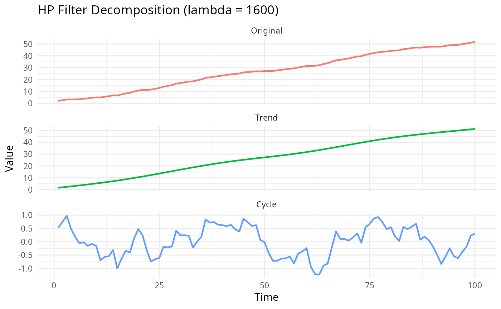

Decomposes a time series into trend and cyclical components using the standard HP filter with a fixed smoothing parameter lambda.
Value
If as_dt = TRUE: A data.table with columns:
- original
The input series
- trend
The estimated trend component
- cycle
The cyclical component
With attribute lambda (the input lambda value).
If as_dt = FALSE: A list containing original, trend,
cycle, and lambda.
Details
The HP filter solves the minimization problem:
$$\min_{\{g_t\}} \left\{ \sum_{t=1}^T (y_t - g_t)^2 + \lambda \sum_{t=2}^{T-1} [(g_{t+1} - g_t) - (g_t - g_{t-1})]^2 \right\}$$
The solution is obtained by solving:
$$(I + \lambda K'K)g = y$$
where \(K\) is the second-difference matrix.
References
Hodrick, R.J., & Prescott, E.C. (1997). Postwar US business cycles: An empirical investigation. Journal of Money, Credit and Banking, 29(1), 1-16.
Ravn, M.O., & Uhlig, H. (2002). On adjusting the Hodrick-Prescott filter for the frequency of observations. Review of Economics and Statistics, 84(2), 371-376.
Examples
# Example 1: Simple random walk with cycle
set.seed(123)
n <- 80
y <- cumsum(rnorm(n)) + sin((1:n) * pi / 10)
result <- hp_filter(y, lambda = 1600)
head(result)
#> original trend cycle
#> <num> <num> <num>
#> 1: -0.2514587 1.569064 -1.82052292
#> 2: -0.2028679 1.633241 -1.83610898
#> 3: 1.5770722 1.696280 -0.11920792
#> 4: 1.7896201 1.755896 0.03372421
#> 5: 1.9678513 1.809729 0.15812277
#> 6: 3.6339728 1.855439 1.77853356
# Example 2: GDP-like series
set.seed(456)
gdp <- cumsum(rnorm(100, mean = 0.5, sd = 0.3)) + 2 * cos(2 * pi * (1:100) / 40)
gdp_decomp <- hp_filter(gdp, lambda = 1600)
# Plot the decomposition
if (require(ggplot2)) {
plot_data <- data.table::data.table(
t = 1:length(gdp),
Original = gdp,
Trend = gdp_decomp$trend,
Cycle = gdp_decomp$cycle
)
plot_data_long <- data.table::melt(plot_data, id.vars = "t")
ggplot2::ggplot(plot_data_long, ggplot2::aes(x = t, y = value, color = variable)) +
ggplot2::geom_line(linewidth = 0.8) +
ggplot2::facet_wrap(~variable, ncol = 1, scales = "free_y") +
ggplot2::labs(
title = "HP Filter Decomposition (lambda = 1600)",
x = "Time", y = "Value"
) +
ggplot2::theme_minimal() +
ggplot2::theme(legend.position = "none")
}
